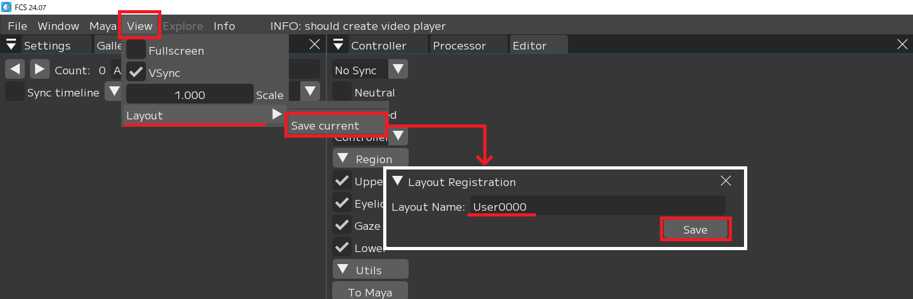

Frequently Asked Question
Using FCS
Q：FCS操作時にインターネット接続は必要ですか？
FCS requires constant internet access for checking the validity of the license. WiFi should work but we recommend using wired internet.
Q：PCのスペックの決まりはありますか？
**Minimum Specs: CPU: Intel Core i5-9400F GPU: - Memory: DDR4 16GB or more Recommended Specs: CPU: Intel Core i7-13700K GPU: Nvidia RTX 3080 Memory: DDR4 128GB or more
Q：専用のヘッドマウントカメラは必要ですか？
**No specific camera is required Commercial cameras (i.e., Gopro, iPhone) would work, both table mounted or head mounted. You can test your own footage with our 30 days free trials. (No credit card required.) **
Q：MacOSには対応していますか？
It is not supported at this time, but it is planned to be supported in the future. (As of June 2024)
Q：FCSを使用するにあたって、何か別のソフトは必要になりますか？
Maya is required. (Compatible with Maya 2018/2020/2022/2023/2024)
FCS features
Q：FCSは撮影の際、アクターにマーカーを付ける必要はありますか？
Since FCS is equipped with auto-tracking, there is no need to apply markers to the actor.
Q：ランドマークがズレた際に修正できますか？
Due to auto-tracking, landmark misalignment cannot be corrected.
Q：舌のトラッキングはできますか？
Tongue tracking is not supported.
Q：モーフではなくスケルトンにも対応していますか？
FCS supports not only morphs but also skeletons.
Q：同じ役者が複数キャラクターを担当しているのですが、Profileの使い回しができますか？
It is possible if it’s the same rig. Please create a new session file through Export, and change the Maya file you want to link.
Q：Mayaを別途、起動する必要はありますか？
Once the project file is set up, you can launch Maya with a single click from FCS.
Q：ライブキャラクターアニメーションはできますか？
It is not possible at this time, but we plan to provide support in the future. (As of June 2024)
Q：Profileには、ROM体操は必須ですか？
While ROM is not mandatory for the profile, it is recommended to add it for improved accuracy.
Q：プラグインなどの関係上、Mayaを別途で起動させる必要がありますが、どうしたらよろしいでしょうか？
In that case, please manually open the port in Maya. After launching Maya, enter the following command in the script editor (Mel): commandPort -stp “python” -n “:42069” If you ask your technical staff to add the same command to the script that launches Maya, you will achieve the same behavior. If port 42069 is already in use, you can change the port in Settings.
Q：マニュアル以外のコントローラーリグを追加することはできますか？
If the controller rig other than the instruction manual can be categorized as Upper/eyelid/gaze/lower, it can be added optionally.
Q：Metahuman以外のコントローラーリグにも対応していますか？
It generally supports rigs with controllers. Blend shapes and joints can also be registered as controllers and allow for animation output.
Q：解析動画に関して、画角が同じであれば撮影場所が変わっても問題ありませんか？
As long as the angle of view is the same, it is not a problem if the shooting location changes. You can accommodate this by adding a pickup in the profile.
Q：動画の画質(フルHDと4Kなど)が変わると、オートトラッキング精度に影響がありますか？ そのほかに影響が出るところはありますか？推奨はありますか？
Except for extremely low resolution (below 480P) or poor quality (extremely dark lighting) videos, the quality of the video has little impact on auto-tracking accuracy.
Q：動画のリフレッシュレート(60fpsと120fpsなど)が変わると、オートトラッキング精度に影響がありますか？ そのほかに影響が出るところはありますか？推奨はありますか？
If possible, please shoot in a well-lit area. Additionally, for action scenes, it is advisable to use a high frame rate camera to minimize motion blur, but this is not a problem.
Q：再起動が必要な場合はありますか？
**You can change various items in FCS under File ▶ Settings. Changes will be reflected after restarting, so a restart is required.
Q：レイアウトの登録はできますか？
You can save the layout information at registration in FCS under View ▶ Layout.
Activate the “Layout Registration” window by selecting View ▶ Layout ▶ Save Current.
Enter the “Layout Name”
You can register by clicking Save

Regarding license
Q：1ライセンスの場合、2台のPCで同時作業できますか？
No, it is not possible. However, you can work on multiple PCs as long as they are not launched simultaneously.
Q：金額はいくらですか？
The annual subscription is 400,000 yen (excluding tax). For those who purchase by the end of December 2024, an additional license will be granted free of charge for each license purchased.
Q：購入後に自動的に契約更新になりますか？
After purchase, the contract will not automatically renew. A popup will appear in the FCS software one month before the subscription ends, and if you wish to renew, you will need to contact our representative.
Q：更新をやめたいときはどうすればいいですか？
No special actions are required. You can use it until the subscription period ends, but it will no longer be usable afterward.
Q：6か月で使用をやめたいときに、返金はありますか？
Since it is an annual subscription contract, there are no refunds for early cancellation.
Q：トライアルはどのくらいの期間、使用できますか？
You can try the trial for 30 days. For more details, please contact us through the [HELTEC webpage].(https://sensing.heltec.co.jp/contact/)
Q：トライアル後に自動的に契約更新になりますか？
A separate purchase process is required to transition from the trial version to the full version. For more details, please contact us through the [HELTEC website].(https://sensing.heltec.co.jp/contact/)
Q："Internal Server Error"というメッセージが表示されてFCSを使用できません。どうしたら良いですか？
There is an issue with the server that checks the license information. Since action is required on the server side, please contact us through the [HELTEC website].(https://sensing.heltec.co.jp/contact/)